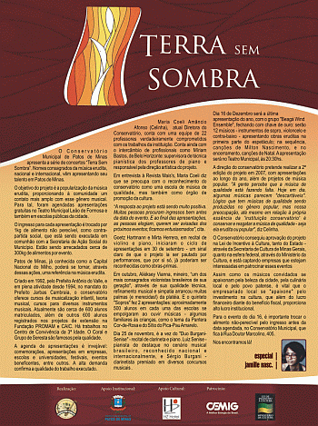
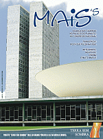

O Conservatório Municipal de Patos de Minas apresenta a série de concertos “Terra sem Sombra”. Nomes consagrados da música erudita, nacional e internacional, vêm apresentando seu talento em Patos de Minas.
O objetivo do projeto é popularização da música erudita, "proporcionando à comunidade um contato mais amplo" com esse gênero musical. Para tal, foram agendadas apresentações gratuitas no Teatro Municipal Leão de Formosa e também em escolas públicas da cidade.
O ingresso para cada apresentação é trocado por 1kg de alimento não perecível, como contra-partida social, que está sendo executada em comunhão com a Secretaria de Ação Social do Município. Estão sendo arrecadados cerca de 300kg de alimentos por evento.
Patos de Minas, já conhecida como a Capital Nacional do Milho, poderá se tornar, através dessas ações, uma referência na música erudita.
Criado em 1992, pelo Prefeito Antônio do Valle, e em plena atividade desde 1994, no mandato do Prefeito Jarbas Cambraia, o conservatório oferece cursos de musicalização infantil, teoria musical, cursos para diversos instrumentos musicais. Atualmente são cerca de 600 alunos matriculados, além de outros 600 alunos registrados nos projetos de extensão na Fundação PROMAM e CAIC. Há trabalhos no Centro de Convivência da 3ª Idade e o Coral e Grupo de Seresta são famosos pela qualidade.
A agenda de apresentações é invejável: comemorações, apresentações em empresas, escolas e universidades, festivais, eventos beneficentes, entre outros. A alta demanda confirma a qualidade do trabalho executado.
Maria Coeli Amâncio Afonso, atual Diretora do Conservatório, conta com uma equipe de 22 professores verdadeiramente comprometidos com os trabalhos da instituição. Conta ainda com o intercâmbio de profissionais como Míriam Bastos, de Belo Horizonte: supervisora de técnica pianística dos professores de piano e responsável pela Direção Artística do projeto.
Em entrevista à Revista Mais's, Maria Coeli diz que se preocupa com o reconhecimento do conservatório como uma escola de música de qualidade, mas também como órgão de promoção da cultura.
“A resposta ao está sendo muito positiva. Muitas pessoas procuram ingressos bem antes da data de apresentação. E ao final das apresentações, as pessoas elogiam, querem ser avisadas dos próximos eventos; ficamos entusiasmados", cita.
Goetz Hartmann e Mirta Herrera, em recital de violino e piano, iniciaram o ciclo de apresentações em 30 de setembro - um sinal claro de que o projeto ia ser pautado por apresentações, que por si só, já poderiam ser reconhecidas como obras-primas.
Em outubro, Aliéksey Vianna, mineiro, “um dos mais consagrados violonistas brasileiros de sua geração", através de sua qualidade técnica, refinamento musical e simpatia arrancou muitas palmas (e merecidas!) da platéia. E o quinteto "Sopros" fez 2 apresentações: aproximadamente 500 crianças em cada uma das escolas se empolgaram ao ouvir músicas - algumas conhecidas, como o tema da Pantera Cor-de-Rosa e do Sítio do Pica-Pau Amarelo.
Dia 25 de novembro, o "Duo Burgani-Senise" - recital de clarineta e piano. Luiz Senise - pianista de destaque no cenário musical brasileiro, reconhecido nacional e internacionalmente, e Sérgio Burgani - clarinetista premiado em diversos concursos musicais .
Dia 16 de Dezembro será a última apresentação do ano, com o grupo "Beagá Wind Ensemble". E prometem fechar com chave de ouro: serão 12 músicos - instrumentos de sopro, violoncelo e contra-baixo - apresentando obras eruditas na primeira parte do espetáculo; na sequência, canções de Milton Nascimento, e no encerramento, canções de Natal. No Teatro Municipal.
A direção do conservatório pretende realizar a 2ª edição do projeto em 2007, com apresentações ao longo do ano todo, além de projetos de música popular. "A gente percebe que a música de qualidade está fazendo falta. Hoje em dia, algumas músicas parecem 'descartáveis'. Lógico que tem músicas de qualidade sendo produzidas no gênero popular, mas nossa preocupação, até mesmo em relação à própria essência da 'instituição conservatório' é conservar e resgatar a música de qualidade - seja ela erudita ou popular", diz Celinha.
O Conservatório consequiu aprovação do projeto na Lei de Incentivo à Cultura, tanto do Estado - através da Secretaria de Cultura de Minas Gerais, quanto na esfera federal, através do Ministério da Cultura, e está captando empresas que estejam interessadas em patrocinar esses eventos.
Assim como os músicos convidados se apaixonam pela cidade, pela culinária local, pela beleza da cidade, é vital que o empresariado local se "apaixone" pelo investimento na cultura, que além do lucro financeiro diante do benefício fiscal, proporciona alto lucro institucional de imagem.
Para o evento do dia 16, é importante trocar o alimento não-perecível pelo ingresso antes da data agendada. O Conservatório Municipal fica à Rua Doutor Marcolino, 405.
Nos encontramos lá!